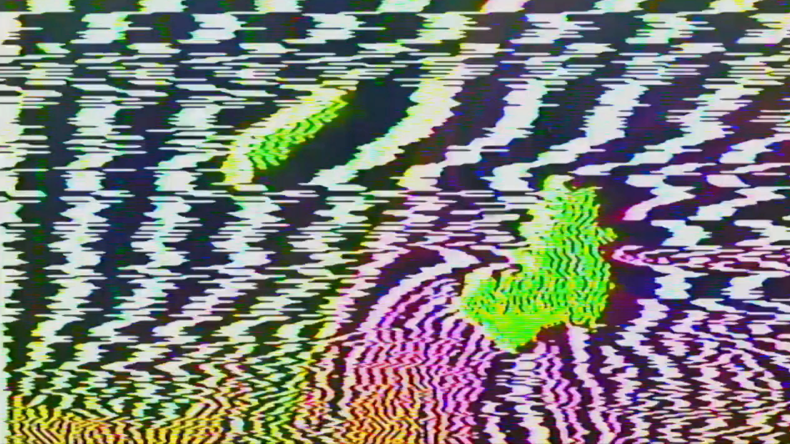
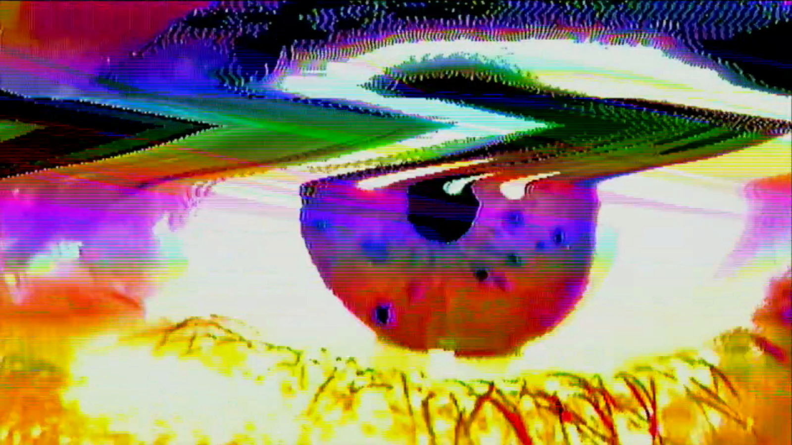
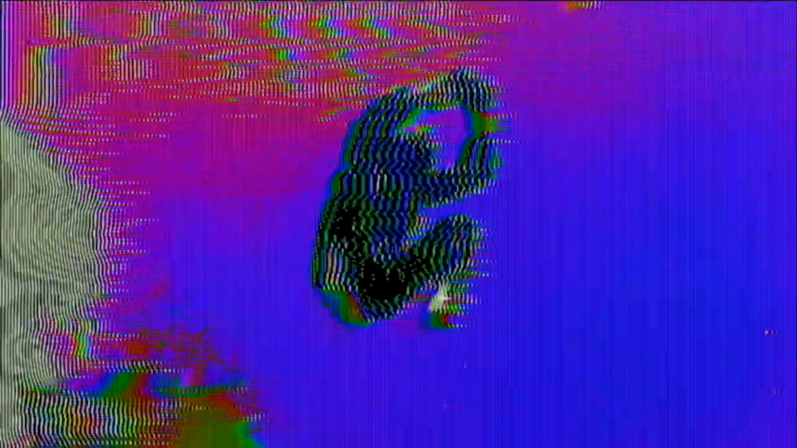
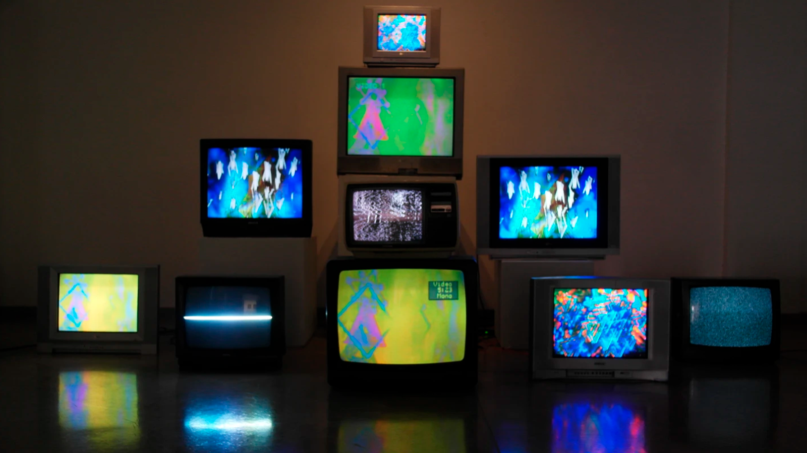
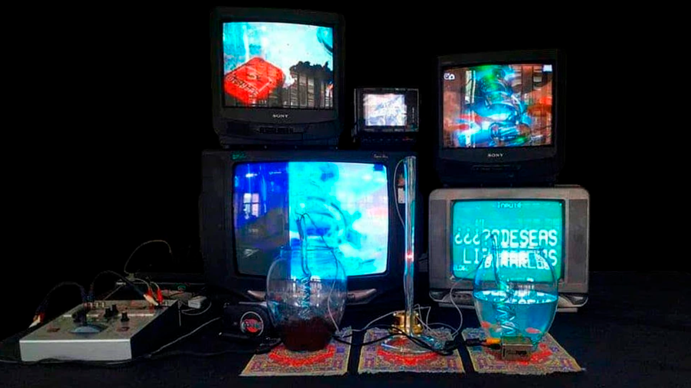
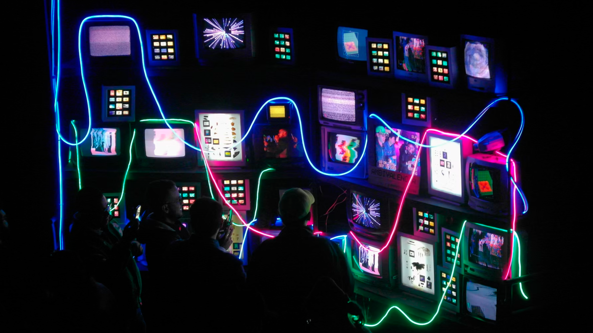
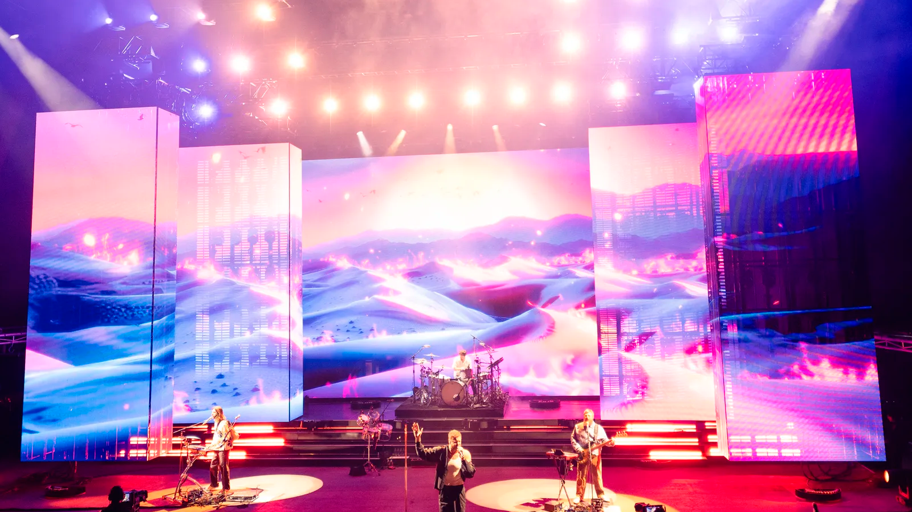
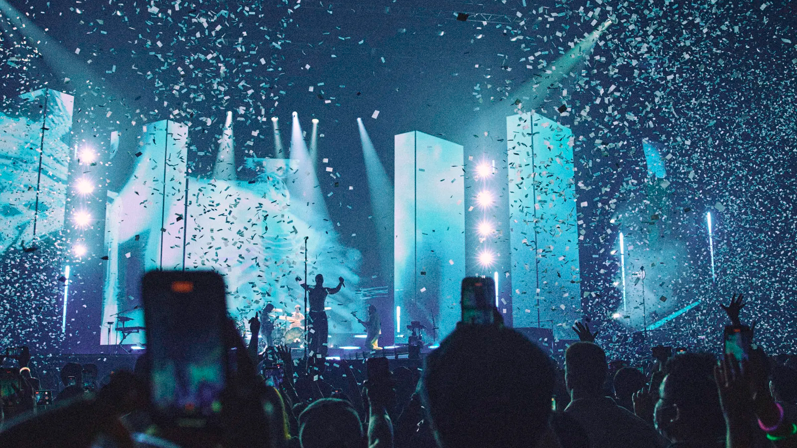
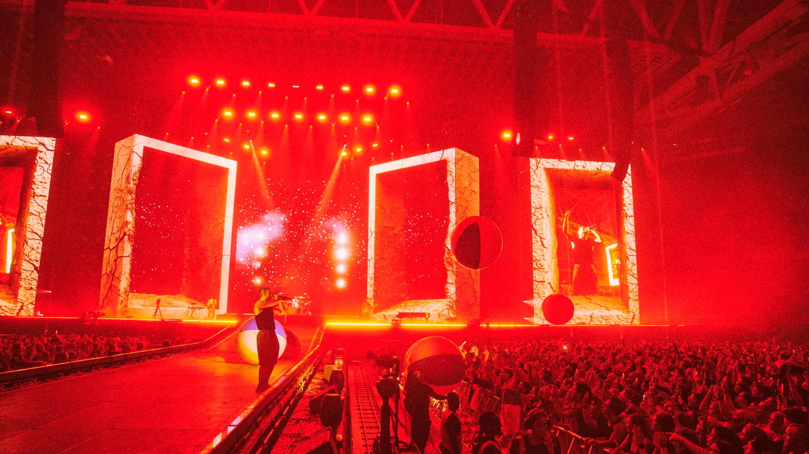

Performance visual · Improvisación · Lenguaje audiovisual vivo
La imagen en tiempo real es aquella que se genera, manipula o mezcla en el mismo momento en que es visualizada. No es un video pre-renderizado, sino una imagen viva, reactiva y en constante transformación.
En el VJing, la imagen se construye en vivo, respondiendo a la música, al espacio, al público y al estado emocional del performer.






El VJ no “pone videos”, interpreta visualmente la música. Así como un músico improvisa con sonidos, el VJ improvisa con imágenes.
La performance visual es un diálogo entre:



Improvisar visualmente es tomar decisiones en tiempo real. No existe un guion fijo, sino una estructura flexible que permite reaccionar a lo que sucede en el entorno.
Esto requiere:
Comprender que el VJing no es solo técnica, sino una forma de expresión artística, donde la imagen se convierte en un instrumento vivo.
Historia, referentes y escenas